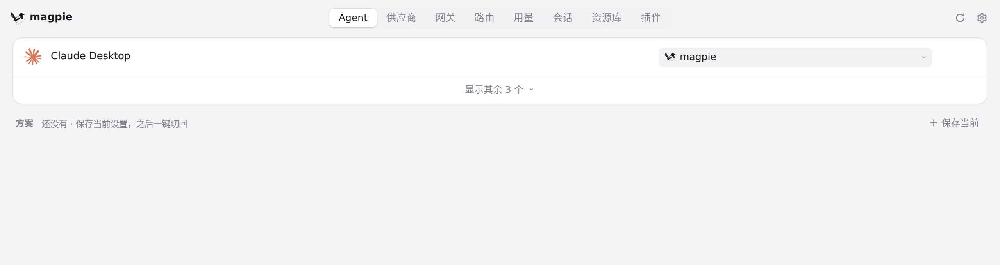

#440 界面预览
commit 580dc03 · 回到 PR · 这次改动只在 app.css 里加了一条 @media (max-width: 600px) 规则：窗口窄到 600px 及以下时，Agent 行的模型/effort 控件换到名字下面一行并与名字左对齐，更宽的窗口里仍并排在名字右侧；其余是两个测试/文档文件的改动。

Agent 行的控件列（窄窗布局在本沙盒看不到） · 沙盒 1280px 窗口下的 Agent 列表：名字与模型、provider 控件的位置
 Agent 行的控件列（窄窗布局在本沙盒看不到） · 放大一个 Agent 行：名字列与右侧控件列的排布
Agent 行的控件列（窄窗布局在本沙盒看不到） · 放大一个 Agent 行：名字列与右侧控件列的排布